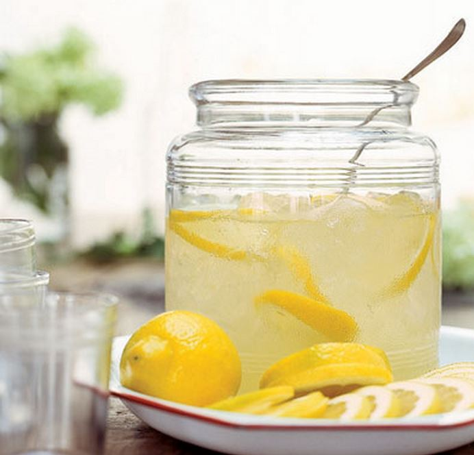
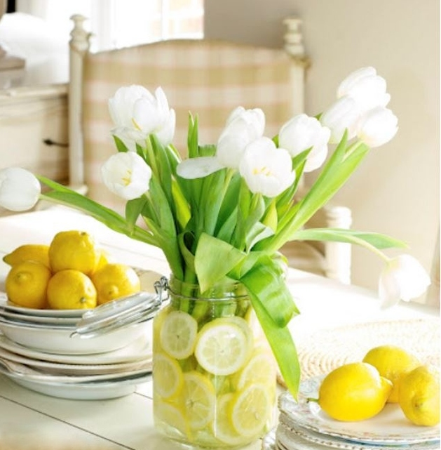

.png)
.PNG)
.PNG)
.PNG)
.PNG)
.PNG)
.JPG)
.JPG)
.PNG)
.PNG)


source
I’ve been wondering about something…
You know how you call a car that is always having problems a lemon? And then there’s that old saying When life gives you lemons make lemonade. Right?
Well, who decided that lemons were a bad thing? It doesn’t make sense to me because I personally think they are quite good. Don’t you?
Afterall, who can resist their bright cheerful color? That yellow just gives you a smile. 🙂
source
And then, there is that crisp fresh scent. mmmmm…
Back in the 70’s teenage girls (including me 🙂 ) went wild over it.
Remember these?
 You can still purchase it here!
You can still purchase it here!
Are you wondering…
Why is Kelly talking about lemons?
There is a perfect explanation. 🙂 You see, I’ve been thinking about Mother’s Day. Last year I went all fruity with strawberries. This year, I really want to use my new dishes for our Mother’s Day lunch.
And lemons just seem the natural thing to go with them. So I want to share with you some of the inspiration I have found.
Decorating inspiration…
(I know I have shared Tracy’s kitchen here before, but it was too good not to show you again!)
Table inspiration…
And then all the food inspiration for our meal!
Lemons pair wonderfully with chicken…
lemon garlic chicken recipe here
lemon chicken romano recipe here
lemon butter chicken recipe here
And lemons also work with potatoes…
lemon herb roasted potato recipe here
And oh my goodness at all the lemon dessert inspiration I’ve found!
lemon curd tartlet recipe here
lemon cream pie dip recipe here
meltaway lemon cookie recipe here
white chocolate lemon parfait recipe here
lemon tart with rosemary crust recipe here
lemon meringue pie in a mason jar recipe here
lemon pie aka Atlantic Beach Pie recipe here
and even a dessert drink…
Chick-fil-a frozen lemonade recipe here
After all the food inspiration I began to find Mother’s Day gift inspiration.
Dishes…
(I wish I had bought these when I saw them a month ago in TJMaxx. 🙁 )
Love these from Pottery Barn!
Not to be outdone by its sister company, Williams Sonoma has this gorgeous platter. 🙂
They also have this deliciously lemon scented gift set that any mother would love…
and this great baking set. 🙂
Perhaps you or your mother would like a new wreath for the door.
I thought both of these were beautiful.
Or then there is always a cookbook. 🙂
The Lemon Cookbook: 50 Sweet & Savory Recipes to Brighten Every Meal
photographs by John Valls
Whew! That was a lot of inspiration!
And to think it all started with my yellow Rutherford china.
Did you know that it also comes in green?
Hmmm…I wonder how it would look with…
limes… 🙂
(Sorry, I couldn’t resist!)

Have a wonderful Mother’s Day!


.PNG)
I love anything with lemon. It smells great and tastes good and is a wonderful, natural cleaner. Can you imagine ice tea without a slice of lemon? Once, when I was in Massachusetts and ordered tea, they brought me lemon in a squeeze packet. Like my mother says, that is just tacky. Go the extra mile and cut up a real lemon for either hot or iced tea. No artificial lemons in beverages please. Loved also the reminder about the shampoo Lemon Up. Can’t believe I had forgotten it. All the girls in my dorm used Lemon Up and also ironed their hair to straighten it. Those were the days!
————————————————————————
No, I cannot imagine iced tea without a lemon slice (or a glass or water without it either.) I agree with your mom about the packet of lemon juice being tacky. Just don’t even offer it, if that is all you can do. I remember the hair ironing, but never did it. I used to think that was sooooo unhealthy for your hair, but it probably is no worse than all the blow drying and curling iron use we do today.
Kelly
Oh Kelly,
You are teasing me! I do like lemons and always have them around to go in my tea but you know I love those green Kate Spade dishes! I love green! I have been gifted a canopy green Kitchenaid mixer for Mother’s Day this year! Thanks for the inspiration! I will have to be on the look out for things with limes on them to compliment my mixer now. Happy Mother’s Day! Thanks for sharing. Take care.
Dawn
——————————————————————-
You NEED those green dishes Dawn! They are calling your name. 🙂 How wonderful that you received that lovely green Kitchenaid mixer!! That was such a smart gift for you. Now you need to go mix up a cake with it!
Kelly
Happy Mother’s Day! I love lemons and some of those recipes I must try. I bought the same yellow Kate Spade set & love it. It’s very versatile and goes with a lot of different patterns for mix and match. I saw it in green a few weeks ago in Atlanta & it’s next on my list. I think I also saw it in navy, but can’t remember, I looked at a lot of china. She needs a nice bright red, I’d snap that up in a second. (I have a small china fetish). Hope you have a wonderful week!
———————————————————————
Aren’t those dishes just wonderful?! I wish I had purchased more of them. You and I both seem to be addicted to china. If we had more space to store them, I know I would be buying more…the green for sure!
Kelly
Have a wonderful Mother’s Day Kelly!
I follow your blog weekly and sometimes daily.
You were the inspiration for our spring break trip to Savannah.
We went everywhere you went and had a ball!
For some great inspiration we stayed with Savannah Dream Vacations. You will love that website. http://www.savannahdreamvacations.com/vacation-rentals.htm
I work from home and your blog is my morning and lunch treat.
Thank you and Happy Mother’s Day!
Carmen
——————————————————————–
What a sweet comment Carmen! I am so glad you enjoyed your trip to Savannah! It is such a beautiful city (with a lot of good food and shopping. 🙂 )I will be sure to check out the website you recommended. I am also glad you enjoy the blog. I hope your Mother’s Day was filled with happy surprises!
Kelly
Lol…I love the unexpected ending!
Lemon is one of my favourite things and I use them often. As a matter of fact we had lemon roasted potatoes with dinner last night and a lemon pie is cooling on the dining room table.
What memories you stirred up seeing the Lemon Up shampoo. I was a teen in the 70s and used this shampoo.
Hope you are having a wonderful Mother’s Day. You could win Mother of the Year!
————————————————————————
I have not tried lemon with potatoes, but between your comment and the recipe, I am going to have to give them a try. Yum to your lemon pie! Wasn’t that shampoo great? It just left your hair smelling so clean and fresh. I hope your Mother’s Day was a super nice one. Thank you for your sweet comments Tricia!
Kelly
Anything lemon makes my heart sing! We’re at my oldest daughter’s house in Texas and my son in law made Mothers Day breakfast today. Lemon blueberry bread and tropical smoothies. Yum!
———————————————————————
That sounds delicious Marianne! What a great way to start your Mother’s Day. 🙂 I know you enjoyed that!
Kelly
Happy Mother’s Day, Kelly! Wonderful lemon inspiration and recipes!
———————————————————————
Thank you Doris! Glad you liked all the lemon things!
Kelly
What a great post. Loves Fresh Lemon was my favorite in the 70’s too! I wish they’d bring that back also 🙂 I love everything lemon. They just make me happy!
———————————————————————-
I am so glad you enjoyed it Laura! Between the yellow and the tart, fresh scent of lemon, I would agree. It is a happy thing!
Kelly
Oh how I wish Loves Fresh Lemon was still made…I would buy a case of it. Hmmmmm that smell… so fresh. I have not seen a bottle of Lemon Up since my teens. What a blast from the past. So cool that you can still purchase it!
Happy Mother’s Day Kelly XO
———————————————————————-
Maybe someone in marketing will see your comment and start making that cologne again, Diane. 🙂 Did you remember that every bottle of Lemon Up had the juice of one whole lemon in it? I am tempted to order a bottle of it, just to get that smell again!
Hope you had a wonderful Mother’s Day.
Kelly
Love, love all the the lemon ideas.
——————————————————————-
Thank you Linda. I am glad you liked them!
Kelly
Oh my gosh,just the other day my friends and I were talking about scents that we used to wear in our teenage years,and I told them I remember wearing Loves Lemon lotion.I can still see the bottle.I can still smell it.I loved that scent.It’s funny that I’m seeing it now on your post.Thanks for showing.Wish you could still get that stuff! Happy Mother’s Day to you too!
———————————————————————
How uncanny Kandy! It was just the freshest smelling scent around. Isn’t it amazing how a smell can take you back?
Hope your Mother’s Day was a fun day. 🙂
Kelly
LOVE LEMON!! Such a fresh scent and one of my favorites. I do remember the Love’s products and yes, it was a favorite. Thank you for so many wonderful sources. This was such a “fresh” post. Why are my lips starting to pucker ?? 🙂 Happy Mothers Day!
———————————————————————–
Ha ha! Too funny Debra. 🙂 Yes, it was a fresh post…especially if you like lemon. 🙂
Hope you had a great Mother’s Day!
Kelly
Well, that is lucky – I’ve just taken some chicken out of the freezer to defrost for tonight’s dinner, thinking that I’m not sure what to do with it but something will turn up… so now we’re having a version of the garlic-lemon-chicken you posted above (we won’t be having pasta, so I guess it’ll be “inspired by”! LOL)
I adore lemon-y anything, so this is a wonderful post for me 🙂 Happy Mother’s Day!
————————————————————————-
Yum…I hope your chicken dish turned out delicious, Frances. Like you, I adore anything lemon-y too. 🙂 I hope your Mother’s Day was a good one. 🙂
Kelly
Kelly,
I love lemon anything and some of these ideas look delicious.
Have a very happy Mother’s Day!
xo,
Karen
————————————————————————
Yay! Another lemon fan. 🙂 Can you believe my daughter does not like lemon?? What is wrong with that child? I hope your Mother’s Day was a good one with those you love.
Kelly
Delicious! And yellow is a favorite of mine in the summertime. Having a serious crush on those dishes! Some great menu ideas that might go all the way to July 4th. Happy Mother’s Day!
———————————————————————-
Glad you liked it Peggy. All those chicken dishes work great for the summer, don’t they? Hope you had a wonderful Mother’s Day!
Kelly
I am the biggest fan of yellow – have it in my kitchen and it makes me happy every morning! Love all of your images!! Hope you have a wonderful Mother’s Day!
——————————————————————–
Yellow IS such a happy color! We had it in our kitchen when we first built this house. I hope your Mother’s Day was a fun one!
Kelly
So refreshing!! I have that lemon loaf pan and have made the lemon loaf from W&S! Just got back from Celebration and had lunch at the Columbian Restaurant and driving around looking at all the lovely homes!! Were you ears burning? Because my daughters and I were talking about you and your outing there not too long ago!! We went shopping at Home Goods and attended a Baby Owl Shower at the Audubon Center for birds of prey an annual event every year on Mother’s Day weekend! Lovely time!! Hope you enjoy your Day tomorrow!
————————————————————————-
Oh I love that pan! I think I will buy it the next time I am in Williams-Sonoma. How wonderful that you got to visit Celebration! We did not eat at the Columbian restaurant, but it sure had great reviews, and the menu looked very interesting. I bet you shopped at that same Home Goods where I got my Kate Spade dishes. I can’t wait until we have one closer to us here. Our day was a nice one, full of visits with family.
Kelly
I STILL love all things lemon! Love’s Fresh Lemon was my favorite until they quit making it! Beautiful post today:)
——————————————————————
If you love lemons, then you could definitely appreciate the lemon post Liz! I always liked Love’s Fresh Lemon too. It just smelled soooo fresh and clean. 🙂
Kelly
Loads of inspiration here and you are tempting me but I’m resisting buying any more dishes. However, may I suggest a recipe that’s a relic of the 70’s but always a favorite no matter where I bring it. Lemon Pudding Cake from the Farm Journal–made it into the FJournal’s all-time list of favorites.
———————————————————————
I will look for that one LJ. It sounds yummy! (And it sounds like one my mom would love. 🙂 )
Kelly
Fabulous lemon inspiration. Have a wonderful Mother’s Day!
———————————————————————
Thank you Shirley. I am glad you liked all the lemon eye candy. And I hope your Mother’s Day was one of your best!
Kelly
Oh my…my mouth was watering because of all those pics! Hope you have a wonderful Mother’s Day Kelly! 😉
————————————————————————
Thank you Donnamae. I did have a good one. And I know what you mean about your mouth watering. I sort of went overboard on the food pictures in this post!
Kelly
I can just imagine the refreshing smell. Delicious.
Happy Mother’s Day to you!
———————————————————————-
I hope you had a good Mother’s Day Lynn. Yes, there is nothing quite like the scent of a freshly cut lemon. 🙂
Kelly
Oh my word! I haven’t thought about the Love’s Fresh Lemon products since, well…since the 70’s. I can just smell them. Thanks for the walk down memory lane.
——————————————————————-
You are so welcome Connie! Doesn’t it take you back?! 🙂
Kelly
Oh my goodness, Kelly! Your post came at the most perfect time today. I just placed an order for the plates and napkins from Pottery Barn. I love using lemons for my summer decor and you just gave me so much more inspiration. Thank you so much! Have a wonderful mother’s day!
———————————————————————–
I would love to have those plates and napkins. They are so cute! I hope your Mother’s Day was a good one Clarissa!
Kelly